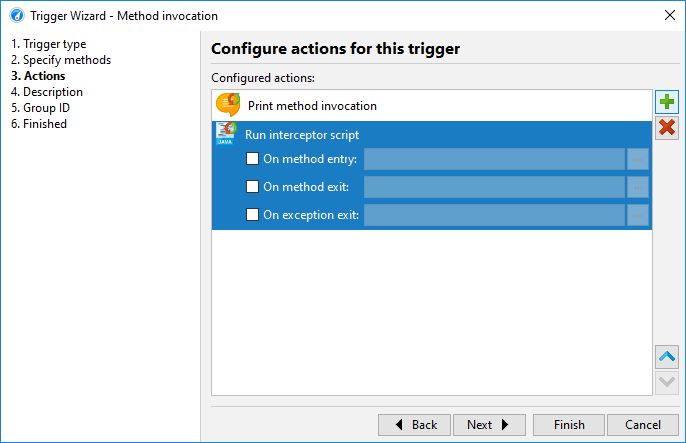

There are two fundamentally different ways to profile an application with JProfiler: By default, you profile with the JProfiler GUI attached. The JProfiler GUI provides you with buttons to start and stop recording and shows you all recorded profiling data.
There are situations where you would like to profile without the JProfiler GUI and analyze the results later on. For this scenario, JProfiler offers offline profiling. Offline profiling allows you to start the profiled application with the profiling agent but without the need to connect with a JProfiler GUI.
However, offline profiling still requires some actions to be performed. At least one snapshot has to be saved, otherwise no profiling data will be available for analysis later on. Also, to see CPU or allocation data, you have to start recording at some point. Similarly, if you wish to be able to use the heap walker in the saved snapshot, you have to trigger a heap dump.
The first solution to this problem is the controller API. With the API, you can programmatically invoke
all profiling actions in your code. In the api/samples/offline directory, there is a runnable example
that shows you how to use the controller API in practice. Execute ../gradlew in that directory
to compile and run it and study the Gradle build file build.gradle to understand how
the test program is invoked.
The Controller API is the main
interface for managing profiling actions at run time. It is contained in bin/agent.jar in your
JProfiler installation or as a Maven dependency with the coordinates
group: com.jprofiler artifact: jprofiler-probe-injected version: <JProfiler version>
and the repository
https://maven.ej-technologies.com/repository
If the profiling API is used during a normal execution of your application, the API calls will just quietly do nothing.
The drawback of this approach is that you have to add the JProfiler agent library to the class path of your application during development, add profiling instructions to your source code and recompile your code each time you make a change to the programmatic profiling actions.
With triggers, you can specify all profiling actions in the JProfiler GUI without modifying your source code. Triggers are saved in the JProfiler config file. The config file and the session ID are passed to the profiling agent on the command line when you start with offline profiling enabled, so the profiling agent can read those trigger definitions.
In contrast to the profiling API, where you add API calls to your source code, triggers are activated when a certain event occurs in the JVM. For example, instead of adding an API call for a certain profiling action at the beginning or at the end of a method, you can use a method invocation trigger. As another use case, instead of creating your own timer thread to periodically save a snapshot, you can use a timer trigger.
Each trigger has a list of actions that are performed when the associated event occurs. Some of these actions correspond to profiling actions in the controller API. In addition, there are other actions that go beyond the controller functionality such as the action to print method calls with parameters and return values or the action to invoke interceptor scripts for a method.

If you have configured a launched session in JProfiler, you can convert it to an offline session by invoking Session->Conversion Wizards->Convert Application Session To Offline from the main menu. This will create a start script with the appropriate VM parameters and take the profiling settings from the same session that you use in the JProfiler UI. If you want to move the invocation to another computer, you have to use Session->Export Session Settings to export the session to a config file and make sure that the VM parameter in the start script references that file.
When profiling an application server with the integration wizards, there is always a start script or config file that is being modified so that the VM parameters for profiling are inserted into the Java invocation. All integration wizards have a "Profile offline" option on the "Startup" step in order to configure the application server for offline profiling instead of interactive profiling.
You may want to pass the VM parameter yourself to a Java call, for example if you have a start script that is not handled by the integration wizards. That VM parameter has the format
-agentpath:<path to jprofilerti library>=offline,id=<ID>[,config=<path>]
and is available from the [Generic application] wizard.
Passing offline as a library parameter enables offline profiling. In this case, a connection
with the JProfiler GUI is not possible. The session parameter determines which session from the
config file should be used for the profiling settings. The ID of a session can be seen in the top right corner of
the Application settings tab in the session settings dialog. The optional config
parameter points to the config file. This is a file that you can export by invoking
Session->Export Session Settings. If you omit the parameter, the standard config
file will be used. That file is located in the .jprofiler11 directory in your user home directory.
When you start offline profiling from Gradle or Ant, you can use the corresponding JProfiler plugins to make your work easier. A typical usage of the Gradle task for profiling tests is shown below:
plugins {
id 'com.jprofiler' version 'X.Y.Z'
id 'java'
}
jprofiler {
installDir = file('/opt/jprofiler')
}
task run(type: com.jprofiler.gradle.TestProfile) {
offline = true
configFile = file("path/to/jprofiler_config.xml")
sessionId = 1234
}
The com.jprofiler.gradle.JavaProfile task profiles any Java class in the same way that you
execute it with the standard JavaExec task. If you use some other method of launching your
JVM that is not directly supported by JProfiler, the com.jprofiler.gradle.SetAgentPathProperty
task can write the required VM parameter to a property. It is added by default when applying the JProfiler
plugin, so you can simply write:
setAgentPathProperty {
propertyName = 'agentPathProperty'
offline = true
configFile = file("path/to/jprofiler_config.xml")
sessionId = 1234
}
and then use agentPathProperty as a project property reference elsewhere after the task has been
executed. The features of all Gradle tasks and the corresponding Ant tasks are documented in detail in
separate chapters.
With the command line utility bin/jpenable, you can start offline profiling in any
running JVM with a version of 1.6 or higher. Just like for the VM parameter, you have to specify an
offline switch, a session ID and an optional config file:
jpenable --offline --id=12344 --config=/path/to/jprofiler_config.xml
With an invocation like this, you have to select a process from a list of running JVMs.
With the additional arguments --pid=<PID> --noinput other you can automate the process
so that it requires no user input at all.
On the other hand, when enabling offline profiling on the fly, it may be necessary to manually start some
recordings or to save a snapshot. This is possible with the bin/jpcontroller command
line tool.
If the profiling agent is only loaded, but no profiling settings have been applied, no recording actions can be
switched on and so jpcontroller will not be able to connect. This includes the
case where you enable profiling with jpenable, but without the offline
parameter. If you enable offline mode, the profiling settings are specified and
jpcontroller can be used.
More information on the jpenable and jpcontroller executables
is available in the command line reference.